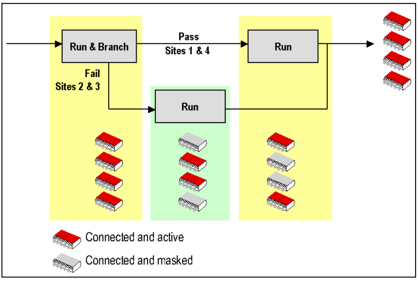
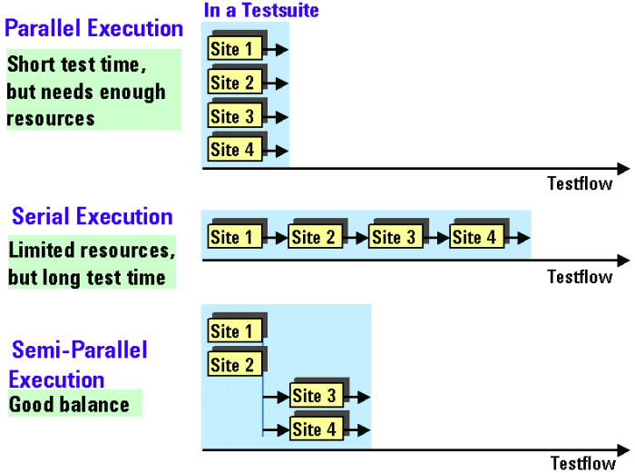
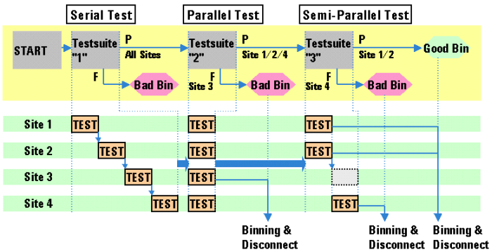

Processing test flow blocks in a multisite setup
The following rules apply to multisite testing:
- Only optimized tests are run in parallel.
- Each test flow consists of blocks (for example "run", "run and branch", loops, "if/then"
statements etc.). All sites enter and leave a block simultaneously. This means sites might have
to wait from time to time for Sites in other branches to finish (if the devices of one or more
Sites are binned, this is also considered as "finished"). See the figure below.

- In pass/fail branches, failing branches are taken before passing branches.
- In if/then branches, FALSE statements are taken before TRUE statements.
- Test suites that are not run in parallel but sequentially are always run for the site with the lowest number first.
In a test flow, you can select the type of test execution (serial, parallel, or semi-parallel) for each test suite.
A test suite executes a serial, parallel, or semi-parallel test depending on what you have selected. This is shown in the following figures.

You can also combine the serial, parallel, and semi-parallel tests in a test flow, as shown in the figure below.

Functional changes
- Introduced before SmarTest 6.3.2